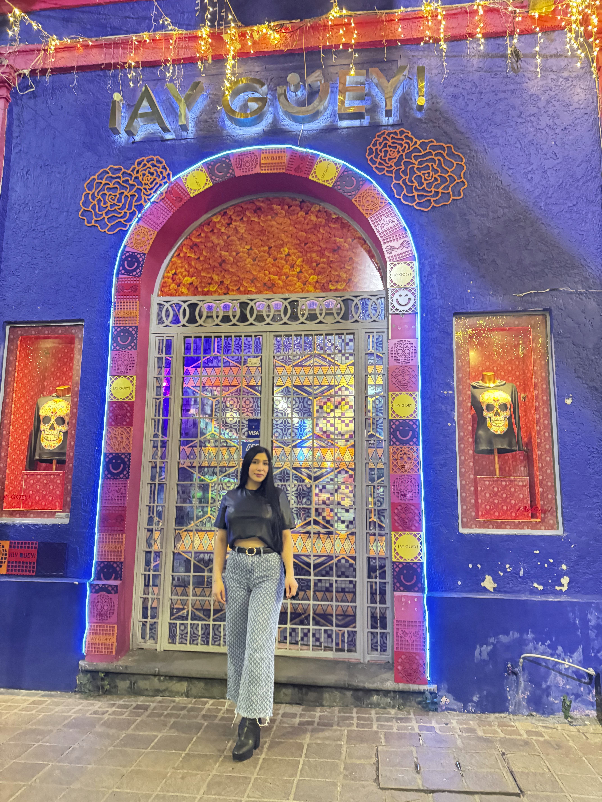

I'm from Gudalajara, Mexico, and when I moved to the U.S, at 17, English felt like this mysterious puzzle that kept changing the rules on me. I'd mix words, laugh at my own mistakes, and just keep going. Now those little moments remind me that learning, even when messy, is actually kind of funny and kind of brave. At that time, I was a very shy girl, I used to feel embarrassed easily, and even simple everyday activities could make me feel anxious. Stepping out of my comfort zone was not easy, but I worked hard, learned step by step, and gradually became more confident. My parents taught me consistency and effort, and those values helped me build a new life here.